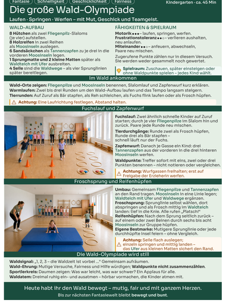
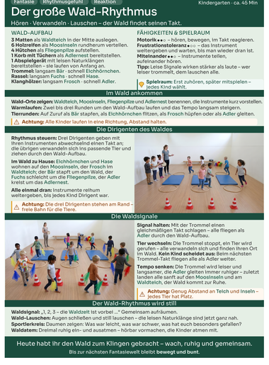
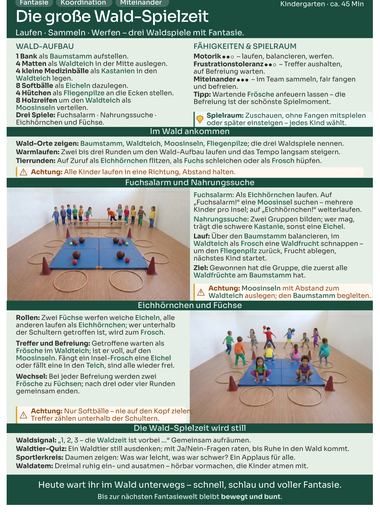
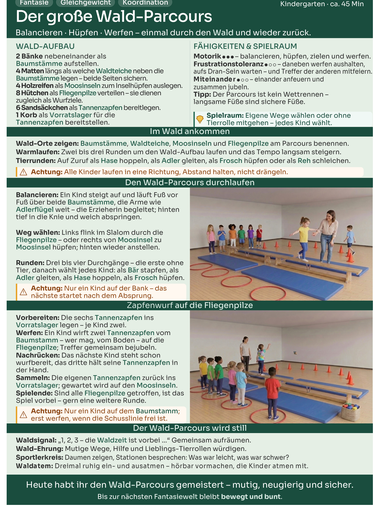

Fantasie für die Kinder
Bekannte Materialien verwandeln sich in Waldteiche, Moosinseln, Fliegenpilze und Waldschätze. Die Kinder betreten keine Turnhalle – sie betreten einen Wald.
Bewegungsstunden für Krippe und Kindergarten
Aus Hütchen werden Fliegenpilze, aus Matten Waldteiche und aus vertrautem Material eine ganze Themenstunde – klar aufgebaut, altersgerecht übersetzt und bereit für den echten Kita-Alltag.




Abbildungen: Praxistest-Fassungen · Fotos KI-generiert.
Bekannte Materialien verwandeln sich in Waldteiche, Moosinseln, Fliegenpilze und Waldschätze. Die Kinder betreten keine Turnhalle – sie betreten einen Wald.
Material, Aufbau, Begleitung, Sicherheit und Ausklang stehen auf jedem Blatt an derselben verlässlichen Stelle. Wer ein Handout kennt, kennt alle.
Kein Erfinden unter Zeitdruck: Die Stunde trägt – und lässt Raum für Ihre Gruppe. Sie entscheiden, was Ihre Kinder heute brauchen.
Die Kinder kommen im eigenen Tempo an: zuschauen, näher rücken, mitgehen – alles ist Teilnahme.
Gemeinsam entdecken oder spielen – das Blatt führt mit klaren, kurzen Schritten.
Ein neuer Impuls hält die Stunde lebendig, ohne sie zu überladen.
Mit dem Waldsignal und dem gemeinsamen Waldatem endet jede Stunde gleich – ein Ritual, das Sicherheit gibt.
Diese Rituale verbinden alle acht Blätter – sie geben den Kindern Halt und Ihnen den roten Faden in die Hand.
Sie kennen Ihre Kinder. Wir liefern den roten Faden.
Krippe und Kindergarten erleben denselben Wald – aber nicht dieselbe Stunde. Was die Kleinen als ruhiges Entdecken erleben, wird für die Großen zur Olympiade. Aufbau, Sprache und Rituale bleiben vertraut; Tempo, Spielformen und Anspruch sind für jede Altersstufe eigens gedacht.
Jede Themenwelt umfasst acht Handouts: vier Stundentypen, jeweils für Krippe und Kindergarten. Keine feste Reihenfolge – Sie wählen, was zu Ihrer Woche passt.
Ruhig ankommen und ausprobieren – oder der große Tag der Waldspiele.
Kleine Wege durch den Wald – und der große Lauf über Baumstämme und Moosinseln.
Schwer wie Kastanien, leicht wie Federn – freies Spiel in zwei Größen.
Der Wald findet seinen leisen Takt – vom Lauschen bis zum gemeinsamen Klang.
René Krakow ist Ergotherapeut und begleitet Kinder individuell in Krippe und Kindergarten. bewegt & bunt ist aus diesem Alltag entstanden – aus einer einfachen Frage: Wie kann eine Bewegungsstunde klar vorbereitet sein und trotzdem offen für jedes einzelne Kind bleiben? Die Antwort steht auf jedem Blatt: Sie kennen Ihre Kinder. bewegt & bunt liefert Struktur und roten Faden.
Mehr über René →„Ein Hütchen bleibt ein Hütchen – bis ein Kind darin einen Fliegenpilz sieht."
Die Handouts befinden sich im begleiteten Praxistest und werden persönlich übergeben. Schreiben Sie mir gern, wenn Sie einen Einblick erhalten oder mit Ihrer Einrichtung teilnehmen möchten – ich antworte zeitnah.